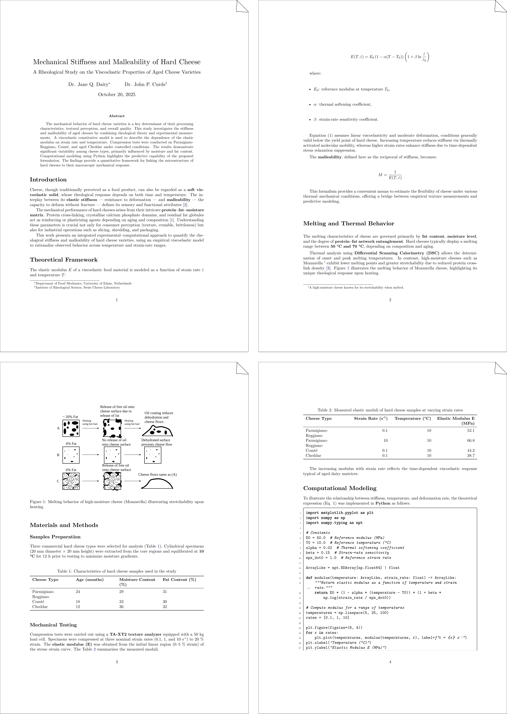

Research Paper¶
This example shows how TeXSmith can be used to write scientific papers with
Markdown source, bibliographies, and figures. It uses the article template
package, which provides a standard article layout with support for
citations, cross-references, and floating figures/tables.
The documentation preview uses the default A4 portrait layout. Click the image to download the PDF.

Here is the source code for this example:
---
press:
include_paths:
- ../../..
subtitle: >
A Rheological Study on the Viscoelastic Properties of Aged Cheese Varieties
authors:
- name: Dr. Jane Q. Dairy
affiliation: Department of Food Mechanics, University of Edam, Netherlands
- name: Dr. John P. Curds
affiliation: Institute of Rheological Science, Swiss Cheese Laboratory
date: October 20, 2025
slots:
abstract: Abstract
bibliography:
WADHWANI20111713: https://doi.org/10.3168/jds.2010-3952
---
# Mechanical Stiffness and Malleability of Hard Cheese
## Abstract
The mechanical behavior of hard cheese varieties is a key determinant of their
processing characteristics, textural perception, and overall quality. This study
investigates the stiffness and malleability of aged cheeses by combining
rheological theory and experimental measurements. A viscoelastic constitutive
model is used to describe the dependence of the elastic modulus on strain rate
and temperature. Compression tests were conducted on Parmigiano-Reggiano, Comté,
and aged Cheddar under controlled conditions. The results demonstrate significant
variability among cheese types, primarily influenced by moisture and fat content.
Computational modeling using Python highlights the predictive capability of the
proposed formulation. The findings provide a quantitative framework for linking
the microstructure of hard cheeses to their macroscopic mechanical response.
## Introduction
Cheese, though traditionally perceived as a food product, can also be regarded
as a **soft viscoelastic solid**, whose rheological response depends on both time
and temperature. The interplay between its **elastic stiffness** --- resistance
to deformation --- and **malleability** --- the capacity to deform without
fracture --- defines its sensory and functional attributes [^Prentice1993].
The mechanical performance of hard cheeses arises from their intricate
**protein–fat–moisture matrix**. Protein cross-linking, crystalline calcium
phosphate domains, and residual fat globules act as reinforcing or plasticizing
agents depending on aging and composition [^Jaoac2019]. Understanding these
parameters is crucial not only for consumer perception (texture, crumble,
brittleness) but also for industrial operations such as slicing, shredding,
and packaging.
This work presents an integrated experimental–computational approach to quantify
the rheological stiffness and malleability of hard cheese varieties, using an
empirical viscoelastic model to rationalize observed behavior across temperature
and strain-rate ranges.
## Theoretical Framework
The elastic modulus $E$ of a viscoelastic food material is modeled as a function
of strain rate $\dot{\varepsilon}$ and temperature $T$:
$$
E(T, \dot{\varepsilon}) = E_0 \left( 1 - \alpha (T - T_0) \right)
\left( 1 + \beta \ln \frac{\dot{\varepsilon}}{\dot{\varepsilon}_0} \right)
$$
where:
* $E_0$: reference modulus at temperature $T_0$,
* $\alpha$: thermal softening coefficient,
* $\beta$: strain-rate sensitivity coefficient.
Equation (1) assumes linear viscoelasticity and moderate deformation, conditions
generally valid below the yield point of hard cheese. Increasing temperature
reduces stiffness via thermally activated molecular mobility, whereas higher
strain rates enhance stiffness due to time-dependent stress relaxation suppression.
The **malleability**, defined here as the reciprocal of stiffness, becomes:
$$
M = \frac{1}{E(T, \dot{\varepsilon})}
$$
This formalism provides a convenient means to estimate the flexibility of cheese
under various thermal–mechanical conditions, offering a bridge between empirical
texture measurements and predictive modeling.
## Melting and Thermal Behavior
The melting characteristics of cheese are governed primarily by **fat content**,
**moisture level**, and the degree of **protein–fat network entanglement**. Hard
cheeses typically display a melting range between **50 °C and 70 °C**, depending
on composition and aging.
Thermal analysis using **Differential Scanning Calorimetry (DSC)** allows the
determination of onset and peak melting temperatures. In contrast, high-moisture
cheeses such as Mozzarella [^1] exhibit lower melting points and greater
stretchability due to reduced protein cross-link density [^WADHWANI20111713].
The figure [](#melting-behavior) illustrates the melting behavior of Mozzarella
cheese, highlighting its unique rheological response upon heating.
{ width=80% }
/// figure-caption
attrs: {id: melting-behavior}
Melting behavior of high-moisture cheese (Mozzarella) illustrating stretchability
upon heating
///
## Materials and Methods
### Sample Preparation
Three commercial hard cheese types were selected for analysis [](#cheese-samples).
Cylindrical specimens (20 mm diameter × 20 mm height) were extracted from the core
regions and equilibrated at **10 °C** for 12 h prior to testing to minimize
moisture gradients.
| Cheese Type | Age (months) | Moisture Content (%) | Fat Content (%) |
| ------------------- | ------------ | -------------------- | --------------- |
| Parmigiano-Reggiano | 24 | 29 | 31 |
| Comté | 18 | 33 | 30 |
| Cheddar | 12 | 36 | 32 |
/// table-caption
attrs: {id: cheese-samples}
Characteristics of hard cheese samples used in the study
///
### Mechanical Testing
Compression tests were carried out using a **TA-XT2 texture analyzer** equipped
with a 50 kg load cell. Specimens were compressed at three nominal strain rates
(0.1, 1, and 10 s⁻¹) to 20% strain. The **elastic modulus (E)** was obtained
from the initial linear region (0–5 % strain) of the stress–strain curve. The
table [](#mechanical-results) summarizes the measured moduli.
| Cheese Type | Strain Rate (s⁻¹) | Temperature (°C) | Elastic Modulus E (MPa) |
| ------------------- | ----------------: | ---------------: | ----------------------: |
| Parmigiano-Reggiano | 0.1 | 10 | 52.1 |
| Parmigiano-Reggiano | 10 | 10 | 66.8 |
| Comté | 0.1 | 10 | 44.2 |
| Cheddar | 0.1 | 10 | 38.7 |
/// table-caption
attrs: {id: mechanical-results}
Measured elastic moduli of hard cheese samples at varying strain rates
///
The increasing modulus with strain rate reflects the time-dependent viscoelastic
response typical of aged dairy matrices.
## Computational Modeling
To illustrate the relationship between stiffness, temperature, and deformation
rate, the theoretical expression (Eq. 1) was implemented in **Python** as follows:
``` python linenums="1"
import matplotlib.pyplot as plt
import numpy as np
import numpy.typing as npt
# Constants
E0 = 50.0 # Reference modulus (MPa)
T0 = 10.0 # Reference temperature (°C)
alpha = 0.02 # Thermal softening coefficient
beta = 0.15 # Strain-rate sensitivity
eps_dot0 = 1.0 # Reference strain rate
ArrayLike = npt.NDArray[np.float64] | float
def modulus(temperature: ArrayLike, strain_rate: float) -> ArrayLike:
"""Return elastic modulus as a function of temperature and strain rate."""
return E0 * (1 - alpha * (temperature - T0)) * (1 + beta * np.log(strain_rate / eps_dot0))
# Compute modulus for a range of temperatures
temperatures = np.linspace(5, 25, 100)
rates = [0.1, 1, 10]
plt.figure(figsize=(6, 4))
for r in rates:
plt.plot(temperatures, modulus(temperatures, r), label=f"ε̇ = {r} s⁻¹")
plt.xlabel("Temperature (°C)")
plt.ylabel("Elastic Modulus E (MPa)")
plt.title("Temperature Dependence of Cheese Stiffness")
plt.legend()
plt.grid(True)
plt.tight_layout()
plt.show()
```
This computational approach allows the parametric exploration of cheese stiffness
under varying conditions, offering predictive insight into texture control
during processing.
## Discussion
The results corroborate the expected hierarchy of stiffness among hard cheeses,
with **Parmigiano-Reggiano** exhibiting the highest elastic modulus, consistent
with its lower moisture and greater protein cross-linking. The **Comté** sample
demonstrated intermediate stiffness, while **Cheddar**, being relatively younger
and moister, showed greater malleability.
The positive strain-rate dependence (via $\beta > 0$) implies that cheese behaves
more elastically under rapid deformation, an important consideration for high-speed
industrial slicing. Conversely, the temperature dependence ($\alpha > 0$) highlights
the need for strict temperature control during mechanical handling to maintain
structural integrity.
The modeling results align qualitatively with the empirical data, suggesting that
the simplified rheological model captures the dominant trends despite the inherent
complexity of cheese microstructure.
## Disclaimer
This paper is fictional and intended solely for illustrative purposes in demonstrating
document formatting and structure. The data, authors, and affiliations are entirely
fabricated and do not correspond to real individuals or institutions. Any resemblance
to actual persons, organizations, or scientific studies is purely coincidental.
The purpose is to showcase the accurate conversion from Markdown to LaTeX format
for scientific publications.
## Conclusions
This study integrates rheological experimentation and computational modeling to
quantify the **stiffness–malleability balance** of hard cheeses. The proposed
formulation effectively predicts the combined influence of **temperature** and
**strain rate** on the elastic modulus.
Such predictive tools can aid in optimizing industrial cheese handling, from cutting
and packaging to consumer preparation, by linking measurable mechanical parameters to
sensory texture and thermal stability.
Future work should extend the model to include **nonlinear viscoelasticity** and
**moisture-dependent plasticization effects**, as well as **microstructural imaging
(e.g., SEM, CLSM)** to directly correlate morphology with rheological behavior.
;[^1]: A high-moisture cheese known for its stretchability when melted.
@Inbook{Prentice1993,
author="Prentice, J. H.
and Langley, K. R.
and Marshall, R. J.",
editor="Fox, P. F.",
title="Cheese Rheology",
bookTitle="Cheese: Chemistry, Physics and Microbiology: Volume 1 General Aspects",
year="1993",
publisher="Springer US",
address="Boston, MA",
pages="303--340",
abstract="Rheology is formally defined as the study of the flow and deformation of matter. In everyday experience, not all cheeses appear to flow, though some of the softer ones, such as Brie or Camembert, obviously do. However, it will be shown later that under many conditions even the harder cheeses may be caused to flow. The second part of the definition, the study of deformation, is more immediately applicable to describing the properties of any cheese since deformation may embrace any aspect of the change of shape of a sample.",
isbn="978-1-4615-2650-6",
doi="10.1007/978-1-4615-2650-6_8",
url="https://doi.org/10.1007/978-1-4615-2650-6_8"
}
@article{Jaoac2019,
author = {Bradley, Robert L, Jr and Vanderwarn, Margaret A},
title = {Determination of Moisture in Cheese and Cheese Products},
journal = {Journal of AOAC INTERNATIONAL},
volume = {84},
number = {2},
pages = {570-592},
year = {2019},
month = {11},
abstract = {Variables related to oven-drying samples of cheese and cheese products to determine moisture content were examined to provide more efficient and reproducible methods. Over 6500 samples of cheese were analyzed in an effort to modify the current AOAC procedure. The gravity atmospheric oven was unsuitable for use in accurate moisture analysis because of wide temperature differentials within the oven cavity. Use of this for oven moisture determination resulted in higher variance, which corresponded to the high temperature variation within the oven. Cheese sample preparation using an Oster blender yielded consistently lower variance in final moisture content than did preparation of cheese samples with a hand grater, rotary grater, and plug and plunger. Sample size of 3 ± 0.25 g maximized surface area-to-volume ratios and yielded a lower error in final moisture content because of better control of ambient weight loss rates. Use of combination of disposable 5.5 cm diameter aluminum sample pans with 5.5 cm diameter glass fiber filter pads for covers produced a smaller standard deviation for moisture analysis than did the AOAC pan and insert cover and filter paper covers. All pans must be pre-dried for at least 3 h at 100°C, and the glass fiber covers should be pre-dried for 1 h under the same conditions. All dried pans and covers must be stored in a desiccator with active desiccant. Equipment upgrades from the existing AOAC standard methods provide safer more efficient methods of analysis.},
issn = {1060-3271},
doi = {10.1093/jaoac/84.2.570},
url = {https://doi.org/10.1093/jaoac/84.2.570},
eprint = {https://academic.oup.com/jaoac/article-pdf/84/2/570/32415847/jaoac0570.pdf},
}
To render the example manually:
texsmith cheese.md cheese.bib -tarticle --build
Info
Naturally, this article isn’t an actual research paper! It’s AI-generated content cooked up purely for demo purposes. One reference is real, though—the one containing the original figure. I don’t own the rights to that figure; I simply redrew it in vector form. All author names and the contents of the other references are completely fictional. Any resemblance to real people or publications is entirely coincidental… unless the cheese overlords say otherwise.
Note
I came up with this example because: (1) as a Swiss person, cheese is basically part of my operating system, and (2) when I was a student, a friend of mine did his PhD on cheese and collected delightfully absurd cheese-related research that nobody would imagine studying scientifically.
I initially thought about an article on how Swiss music—specifically yodeling—might influence cheese ripening. But, well… rheology felt slightly more scientifically defensible.